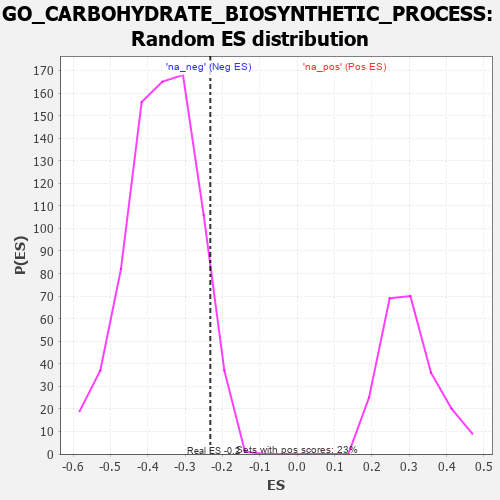

| | | Dataset | 7d |
| Phenotype | NoPhenotypeAvailable |
| Upregulated in class | na_neg |
| GeneSet | GO_CARBOHYDRATE_BIOSYNTHETIC_PROCESS |
| Enrichment Score (ES) | -0.2324329 |
| Normalized Enrichment Score (NES) | -0.6441836 |
| Nominal p-value | 0.9312581 |
| FDR q-value | 1.0 |
| FWER p-Value | 1.0 |
Table: GSEA Results Summary
 Fig 1: Enrichment plot: GO_CARBOHYDRATE_BIOSYNTHETIC_PROCESS
Fig 1: Enrichment plot: GO_CARBOHYDRATE_BIOSYNTHETIC_PROCESS
Profile of the Running ES Score & Positions of GeneSet Members on the Rank Ordered List
| PROBE | GENE SYMBOL | GENE_TITLE | RANK IN GENE LIST | RANK METRIC SCORE | RUNNING ES | CORE ENRICHMENT | | 1 | IRS1 | | | 98 | 1.659 | 0.0824 | No |
| 2 | TKT | | | 143 | 1.309 | 0.1516 | No |
| 3 | GSK3A | | | 351 | 0.745 | 0.1681 | No |
| 4 | G6PC3 | | | 1026 | 0.478 | 0.1105 | No |
| 5 | AKT1 | | | 1040 | 0.476 | 0.1360 | No |
| 6 | G6PC | | | 1121 | 0.459 | 0.1522 | No |
| 7 | P2RY1 | | | 1416 | 0.407 | 0.1384 | No |
| 8 | GPT | | | 1488 | 0.392 | 0.1518 | No |
| 9 | DDB1 | | | 1642 | 0.366 | 0.1534 | No |
| 10 | PC | | | 1891 | 0.321 | 0.1406 | No |
| 11 | GNMT | | | 2261 | 0.266 | 0.1093 | No |
| 12 | KAT2B | | | 2502 | 0.226 | 0.0919 | No |
| 13 | HAS1 | | | 2722 | 0.195 | 0.0755 | No |
| 14 | PCK2 | | | 2823 | 0.180 | 0.0732 | No |
| 15 | WDR5 | | | 2892 | 0.168 | 0.0742 | No |
| 16 | MAEA | | | 3048 | 0.143 | 0.0628 | No |
| 17 | FUT8 | | | 3551 | 0.067 | 0.0034 | No |
| 18 | DGKQ | | | 3856 | 0.020 | -0.0337 | No |
| 19 | EXT1 | | | 3954 | 0.001 | -0.0459 | No |
| 20 | IMPA1 | | | 4112 | -0.024 | -0.0643 | No |
| 21 | MTOR | | | 4114 | -0.025 | -0.0630 | No |
| 22 | PHKG1 | | | 4341 | -0.067 | -0.0876 | No |
| 23 | CLK2 | | | 4628 | -0.124 | -0.1166 | No |
| 24 | EP300 | | | 4941 | -0.186 | -0.1453 | No |
| 25 | PGM1 | | | 5593 | -0.342 | -0.2077 | Yes |
| 26 | G6PD | | | 5638 | -0.358 | -0.1929 | Yes |
| 27 | MGAT2 | | | 5794 | -0.403 | -0.1893 | Yes |
| 28 | PGM2 | | | 6137 | -0.515 | -0.2030 | Yes |
| 29 | INSR | | | 6204 | -0.538 | -0.1805 | Yes |
| 30 | GYG1 | | | 6210 | -0.539 | -0.1504 | Yes |
| 31 | RGN | | | 6233 | -0.547 | -0.1219 | Yes |
| 32 | DYRK2 | | | 6533 | -0.677 | -0.1209 | Yes |
| 33 | GSK3B | | | 6719 | -0.768 | -0.1003 | Yes |
| 34 | PTH1R | | | 6845 | -0.839 | -0.0681 | Yes |
| 35 | PASK | | | 7946 | -3.674 | 0.0031 | Yes |
Table: GSEA details [plain text format]

Fig 2: GO_CARBOHYDRATE_BIOSYNTHETIC_PROCESS: Random ES distribution
Gene set null distribution of ES for GO_CARBOHYDRATE_BIOSYNTHETIC_PROCESS